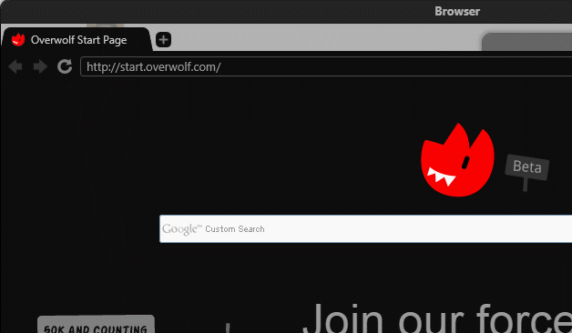
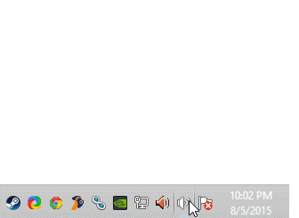
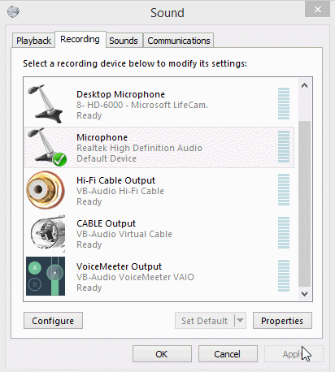

Until Overwolf approves my app you'll have to manually download it from https://github.com/Nawral/Nawral/releases browse to the folder it's located at and install it.

Open your recording devices.

Show disabled and hidden devices. Set stereomix as default. (Make sure whichever device supports stereomix is set to your default sound output as well).

If stereomix isn't there, you may have an unsupported soundcard or your audio drivers may not be installed. You can install the audio drivers for your PC, or install a virtual audio device, like Voicemeeter.
A guide on that will come later.